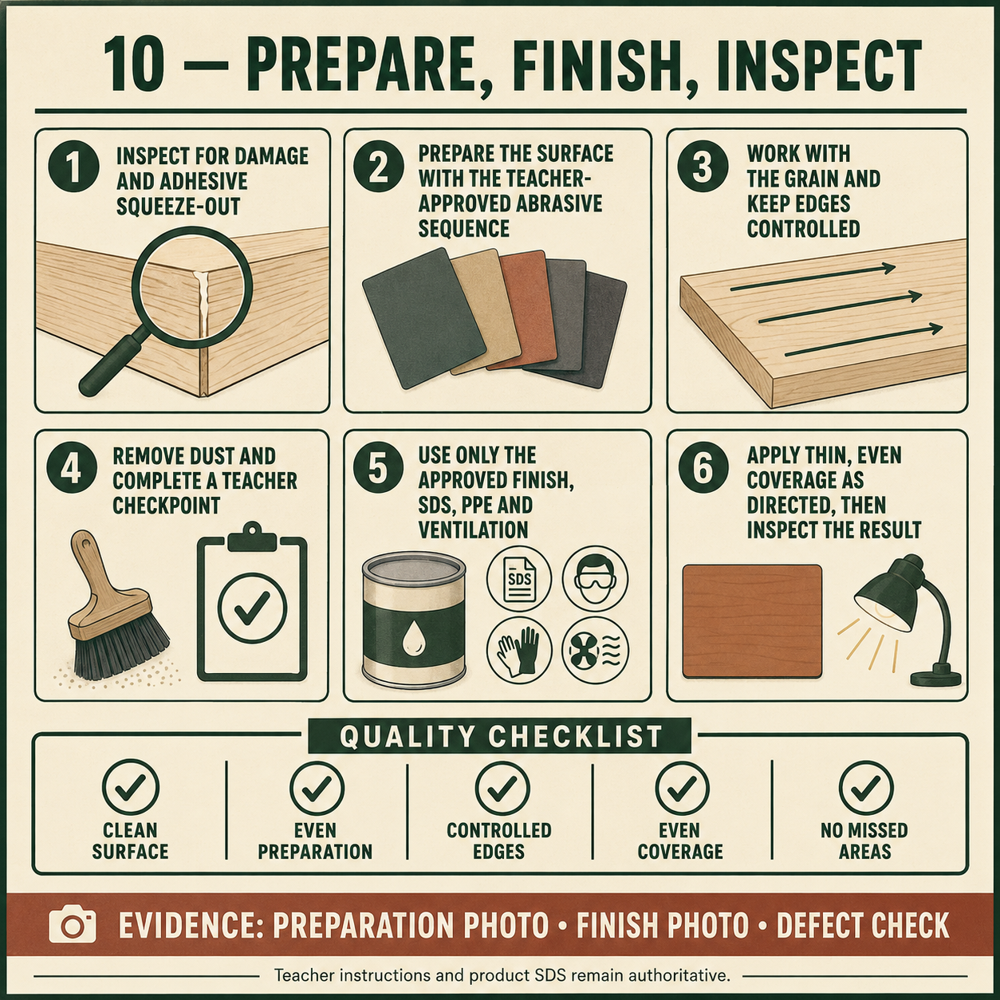
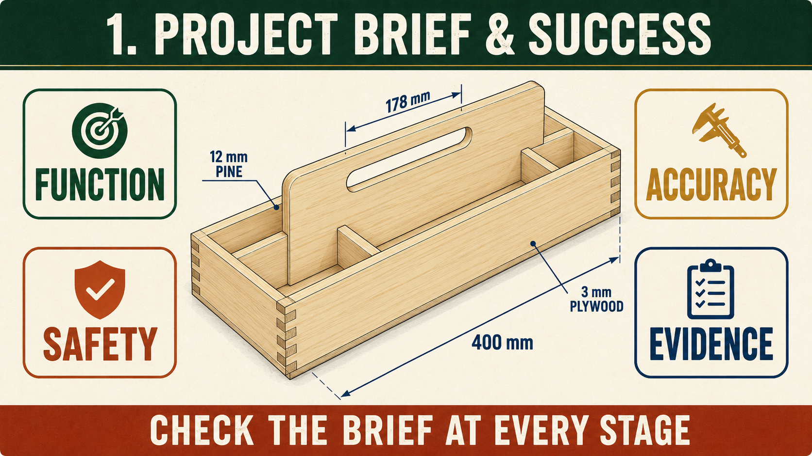

Module presentation
Learn with the slides
Use the presentation to preview Selecting an approved finish for the Carry-All, Applying and inspecting the approved finish, Checking accuracy, function and workmanship before working through the theory, videos, checks and written evidence.
Weeks 17-18
This module
Select and apply the approved finish from verified product information, then inspect the product against the brief.
Your work
Student details
Your entries save automatically in this browser. Use Print / Save PDF before leaving the page.
Theory 1
Selecting an approved finish for the Carry-All

The finish applied to the Carry-All should protect the timber, improve its appearance and suit the product’s intended use. A finish can affect resistance to handling, dirt, moisture and normal wear, but no product makes timber indestructible. Selection should begin by considering how the Carry-All will be used, where it may be stored, the level of durability required and the appearance expected in the project brief. The final choice must be approved by the teacher.
Compatibility is important because the Carry-All includes 12 mm pine components, a 3 mm plywood base, adhesive joints and prepared surfaces. The selected finish must be suitable for the materials and compatible with the adhesive and surface-preparation process used. A product that behaves well on one timber or previous project may not produce the same result here. Students must not mix products, change the application system or invent a finishing recipe without approval.
The product label, technical information and Safety Data Sheet, or SDS, provide essential information about hazards and safe use. These sources control required personal protective equipment, ventilation, handling, storage, first aid and disposal. Drying time, recoating requirements and application methods are also product-specific. Teacher directions, the SWMS and school procedures must be followed because workshop facilities and local disposal arrangements may differ.
- Consider the Carry-All’s function, use context and required durability.
- Check that the product is approved and compatible with the materials.
- Read the label and SDS before opening or applying the finish.
- Confirm ventilation, PPE, storage and waste-disposal requirements.
- Use a teacher-approved test piece before finishing the project.
A test piece allows the finish to be judged before it is applied to the completed Carry-All. It should use suitable material prepared in a comparable way and can reveal changes in colour, grain contrast, sheen or surface feel. The test also helps identify unexpected reactions, contamination or uneven appearance. A test result must still be interpreted using the product information and teacher guidance rather than personal preference alone.
Finish selection should be recorded as a reasoned decision. Strong folio evidence identifies the approved product, explains why it suits the Carry-All and records the safety and disposal information that controlled its use. It should also show the test-piece result and any teacher-approved decision made from it. This demonstrates that the finish was selected for function, compatibility and safe use rather than simply because it was available.
Theory 2
Applying and inspecting the approved finish
Applying the approved finish is a controlled manufacturing stage, not simply adding colour or shine. Before beginning, confirm that the Carry-All has passed its surface-preparation inspection and that the work area, product and required safety controls are ready. The product label, Safety Data Sheet, teacher directions, SWMS and school procedures control application, ventilation, personal protective equipment, handling, storage and disposal. Do not rely on instructions remembered from another product.
The finish should be applied using the approved materials and method. Thin, even coverage may be required for some products, but this must be confirmed from the selected product’s directions rather than treated as a universal rule. Work systematically so the sides, handle panel, dividers, joints, internal areas and base receive the intended coverage. Avoid missed areas, heavy build-up, runs, pooling and unnecessary overlap, particularly around corners, housings and detailed joints.
Contamination can reduce adhesion and create an uneven appearance. Dust, adhesive residue, dirty application materials, fingerprints or contact with an unclean surface may affect the result. Keep the Carry-All, finishing equipment and surrounding area clean according to the approved process. Once a stage has been completed, protect the project from handling, airborne dust and contact with other objects for the product-specific period directed by the manufacturer and teacher.
- Confirm the approved product, method and safety information before starting.
- Apply coverage systematically and inspect all visible and internal surfaces.
- Check for missed areas, runs, pooling, roughness or contamination.
- Follow the product-specific requirements before beginning another stage.
- Record each completed stage and its inspection result in the folio.
Inspection should occur between finishing stages, not only after the final application. View the Carry-All under suitable light and from several angles. Compare the surface with the approved test piece and look for changes in colour, sheen, texture and coverage. Do not immediately sand, wipe, recoat or add more product when a fault appears. First identify the likely cause, then follow the product information and teacher-approved correction method.
Finish evidence should show more than the completed product. Record the product used, the application stage, the condition observed and the decision made before continuing. Photographs should be taken safely and should clearly show useful details rather than a distant view. This evidence demonstrates that the finish was progressively inspected and controlled instead of applied without checking.
Theory 3
Checking accuracy, function and workmanship

Quality checking means comparing the completed Carry-All with the working drawing, teacher directions and project brief using clear evidence. Appearance matters, but a product is not successful simply because it looks neat from a distance. Accuracy, function, stability, safety and finish must all be inspected. Some criteria can be measured, while others are judged through careful observation, touch and controlled functional checks.
Joint workmanship can be checked by examining the required rebate-butt corners and housings for full seating, aligned edges and shoulders, sound timber and minimal unwanted gaps. The structure should remain square and free from obvious bow or twist. Teacher-approved measuring and checking methods should be used rather than relying only on eyesight. The written 400 mm overall length and 178 mm handle opening may be verified where required, but students must not scale the drawing or invent additional specifications.
- Inspect rebate-butt corners and housings for seating, alignment, damage and visible gaps.
- Check squareness, stability and whether the Carry-All rocks on a flat surface.
- Confirm that the base, dividers and handle panel are secure and correctly located.
- Feel accessible surfaces for sharp edges, splinters, rough patches or unsafe transitions.
- Inspect the approved finish for consistent coverage, contamination and visible defects.
Function depends on the components working together. The 3 mm plywood base should remain supported in the rebate arrangement, while the dividers and central handle or handle panel should be securely located in their housings where shown. The Carry-All should remain stable when placed on an appropriate flat surface. Any carrying check must follow teacher direction and should not involve an unsuitable or unapproved load. Movement, rocking or unusual flexing should be reported and investigated rather than ignored.
Touch safety is an important quality criterion because users will handle the sides and grip the handle opening. Accessible surfaces should be free from splinters, sharp corners, rough adhesive residue and sudden uneven transitions. The finish should appear reasonably consistent across the pine, plywood and detailed areas without obvious missed sections, runs, pooling, dust contamination or damage. Product-specific inspection requirements still come from the approved finish information and teacher directions.
The final judgement should compare evidence with the brief rather than use vague statements such as “it turned out well”. Identify what meets the requirements, what does not, and how you know. Photographs, measurements, close-up inspections and functional observations should support the evaluation. Honest identification of a fault, its likely cause and a realistic improvement demonstrates stronger understanding than hiding the problem.
Guided practice
Weeks 17-18 knowledge checks
Choose an answer, check it and use the progressive hints and feedback to improve.
Apply your learning
Scaffolded written responses
Write first, use the feedback prompts, then compare your reasoning with the appropriate response example.
Finish the two-week block
Save your evidence
Your work saves in this browser, but browser storage is not the official submission. Save the completed page as a PDF before changing devices or clearing browser data.
No marks, answers or personal information are sent from this webpage.